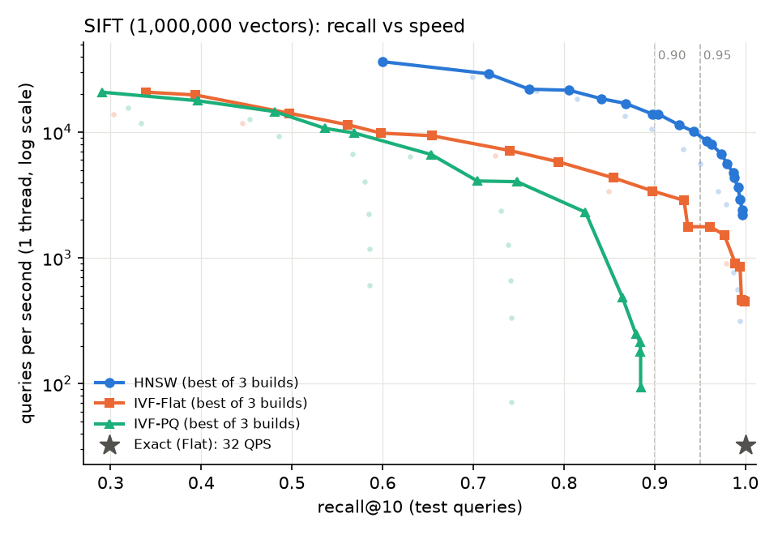
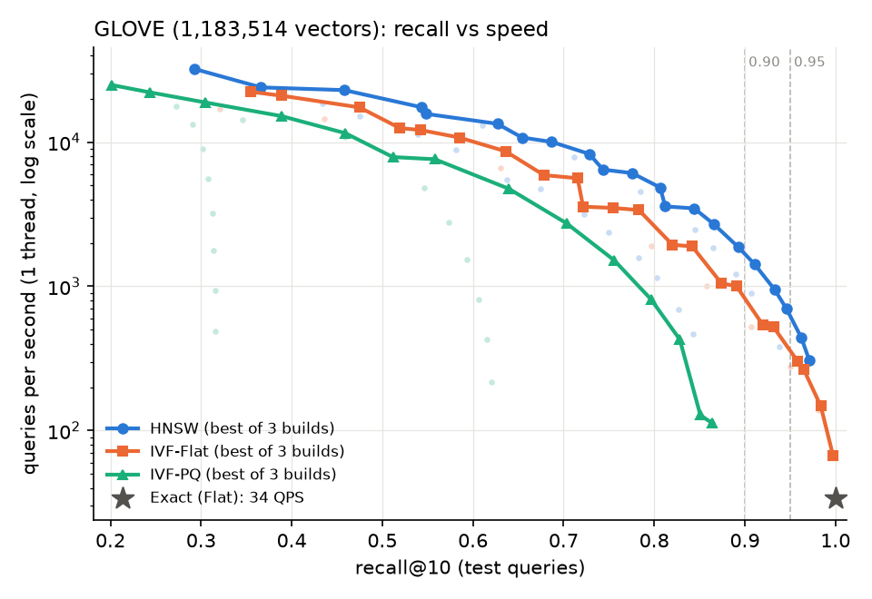
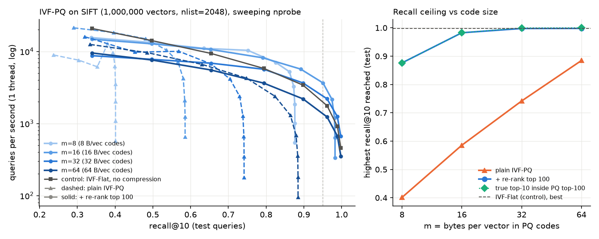
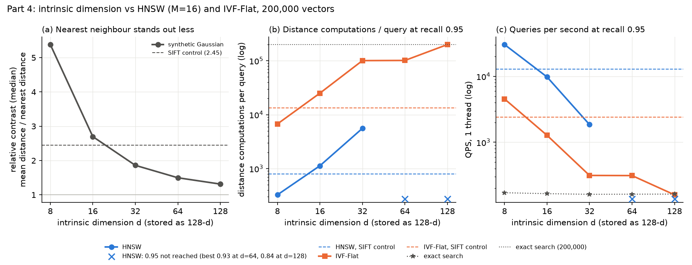

Setup. One laptop: Intel Core i7-12650H (10 cores / 16 threads), 16 GB RAM, Windows 11, on mains power.
Python 3.11.9, faiss-cpu 1.15.0 (HNSW is FAISS IndexHNSWFlat), NumPy 2.4.6. Data: SIFT-1M (128-d) and
GloVe-100 (1.18M, 100-d, L2-normalised so that Euclidean order equals angular order). Queries 0–4,999 are used for
tuning and 5,000–9,999 for every reported number. Recall@10 is my own function: a returned id counts as correct
if its exact distance is no larger than the true 10th-neighbour distance, so ties at the 10th neighbour are not
mistakes; duplicates and padding never count (13 unit tests). Speed is queries per second (QPS), one query per
call, one thread, median of 5 timed passes over 2,000 test queries; building uses all cores. An operating point such as
"QPS at recall 0.95" is chosen on the tune queries (the fastest setting with tune recall ≥ target) and then
measured on the test queries. Everything is regenerated by bash run_all.sh; every run is a row of
results.csv.
FAISS IndexFlatL2 top-100 for all 10,000 queries agrees with the neighbours stored in the files:
tie-aware recall@10 and recall@100 are 1.000 on both datasets. Counting ties as errors, SIFT gives 0.99935: 0.65% of
queries list a different but equally distant 10th neighbour (1.4% of SIFT queries have a tie at rank 10; SIFT's integer
features make exact ties common). GloVe matches exactly.
| Exact search, 1 thread | SIFT QPS | ms / query | GloVe QPS | ms / query |
|---|---|---|---|---|
| one query per call | 32.5 | 30.8 | 33.9 | 29.5 |
| all 5,000 test queries in one call | 566 | 1.77 | 513 | 1.95 |
Why batching is ~16× faster. One query is a matrix–vector product: every one of the 1M vectors (512 MB) is streamed from RAM to do only 2 flops per float loaded, so the query is limited by memory bandwidth (≈17 GB/s here). A batch is a matrix–matrix product (BLAS GEMM): each block of base vectors loaded into cache is reused against many queries, so the CPU runs at its arithmetic limit instead of waiting on memory. Neither changes the amount of arithmetic, only how often each byte is fetched. (The FAISS wheel's BLAS barely used more threads: 16 threads gave only 1.1–1.2× over 1 thread in batch mode.)
Build settings: HNSW M ∈ {8, 16, 32} (efConstruction 100), sweeping efSearch 10–1024; IVF-Flat nlist ∈ {1024, 2048, 4096}; IVF-PQ nlist 2048 with m ∈ {16, 32, 64} (SIFT) or {10, 25, 50} (GloVe) one-byte sub-codes; both IVF types sweep nprobe 1–512. Each curve below is the best trade-off over all build settings of that index (faint dots are all runs).


| QPS at recall@10 (setting) | SIFT @ 0.90 | SIFT @ 0.95 | GloVe @ 0.90 | GloVe @ 0.95 |
|---|---|---|---|---|
| HNSW | 11,568 (M32, ef32) | 8,716 (M32, ef48) | 1,428 (M32, ef256) | 445 (M32, ef768) |
| IVF-Flat | 3,155 (4096, np32) | 1,798 (2048, np32) | 567 (1024, np64) | 294 (2048, np256) |
| IVF-PQ | not reached: best 0.885 (m=64, nprobe 512) | not reached: best 0.864 (m=50, nprobe 512) | ||
| Exact | 32.5 | 32.5 | 33.9 | 33.9 |
| Cost of the 0.95 setting | SIFT build (s) | size (MiB) | bytes/vector | GloVe build (s) | size (MiB) | bytes/vector |
|---|---|---|---|---|---|---|
| HNSW M=32 | 65 | 748 | 784 | 104 | 759 | 672 |
| IVF-Flat nlist=2048 | 26 (22 training) | 497 | 521 | 25 (21 training) | 461 | 409 |
| IVF-PQ, best m (0.95 not reached) | 88 (77 training) | 70 | 73 | 74 (63 training) | 66 | 59 |
| Exact (Flat) | 0.3 | 488 | 512 | 0.2 | 451 | 400 |
Why IVF-PQ never reaches high recall. Its recall levels off (SIFT: 0.59, 0.74, 0.885 for m = 16, 32, 64) and stops rising however many lists are probed. Probing more lists only adds candidates; the ranking among them still uses PQ's approximate distances, and when two candidates' true distances differ by less than the quantisation error, PQ orders them wrongly. That error is fixed by the code size, so the ceiling moves only with m (Part 3).
Hypothesis (committed in 0a642ce before running): plain IVF-PQ's recall ceiling is set by m, not
nprobe; exact re-ranking of the top 100 PQ candidates removes it (≥ 0.95 for m ≥ 16, not for m = 8) because the true
neighbours are usually in PQ's top 100, just misordered; re-ranking costs well under 2× in speed but brings back the
raw vectors (~512 B/vector); so at 0.95 a small-m re-ranked IVF-PQ is at least as fast as IVF-Flat.
Setup: nlist 2048, m ∈ {8, 16, 32, 64}, each index searched plain and with FAISS IndexRefineFlat
(k_factor 10); control: IVF-Flat with the same nlist from Part 2.

| SIFT, nlist 2048 | m=8 | m=16 | m=32 | m=64 | IVF-Flat |
|---|---|---|---|---|---|
| bytes/vector: plain / with re-ranking | 17 / 529 | 25 / 537 | 41 / 553 | 73 / 585 | 521 |
| best recall@10: plain | 0.401 | 0.586 | 0.742 | 0.885 | 0.998 |
| share of true top 10 inside PQ's top 100 | 0.876 | 0.983 | 1.000 | 1.000 | |
| best recall@10: re-ranked | 0.876 | 0.983 | 0.998 | 0.998 | |
| QPS at 0.95, re-ranked | not reached | 2,161 | 2,206 | 1,235 | 1,798 |
Result. The ceiling rises with m and stays below 0.95 even at 64 bytes (supported). Re-ranking lifts recall to 0.983–0.998 for m ≥ 16 and to only 0.876 for m = 8 (supported); for m = 8 and 16 the re-ranked ceiling equals the share of true neighbours present in PQ's top 100 (0.876, 0.983), which confirms the mechanism: re-ranking fixes the order but cannot recover neighbours PQ never proposed. For m ≥ 32 almost all are present and re-ranked IVF-PQ matches IVF-Flat's own ceiling. At the same nprobe re-ranking costs 1.0–1.4× in speed for nprobe ≥ 8 (supported), but needs 529–585 B/vector instead of 17–73 (supported). At 0.95, m = 16 and m = 32 beat IVF-Flat (2,161 and 2,206 vs 1,798 QPS), but m = 64 is slower (1,235) (partly supported): scoring a 64-byte code takes 64 table look-ups, which costs as much as a 128-d float distance, so large codes are not cheaper to scan than raw vectors.
What I changed. Only the intrinsic dimension d ∈ {8, 16, 32, 64, 128} of the data: 200,000 base vectors and
10,000 queries from a standard Gaussian in d dimensions, mapped into 128-d by a fixed random orthonormal matrix (seeded
generator, ann/synthetic.py). Every setting is stored as 128 floats, so one distance computation costs the
same everywhere; exact search runs at 162–172 QPS in all five settings, confirming that. Control: the first
200,000 real SIFT vectors through the same pipeline. Fixed indexes: HNSW (M 16, efC 100, efSearch ≤ 1024) and IVF-Flat
(nlist 512). Mechanism measures: relative contrast (mean distance to a random point ÷ distance to the nearest
neighbour) and FAISS's count of distance computations per query. Hypothesis committed in 39f8fbe before
running.

| 200K vectors, recall 0.95 | d=8 | d=16 | d=32 | d=64 | d=128 | SIFT |
|---|---|---|---|---|---|---|
| relative contrast | 5.38 | 2.70 | 1.86 | 1.50 | 1.31 | 2.45 |
| HNSW: distances / query; speed-up over exact | 326; 177× | 1,128; 59× | 5,575; 11× | 0.95 not reached (best 0.93; 0.84) | 792; 79× | |
| IVF-Flat: share of lists probed; speed-up | 3%; 26× | 13%; 7.7× | 50%; 1.9× | 50%; 1.9× | 100%; 0.97× | 6%; 15× |
What happened and why. As d grows, distances concentrate: the nearest neighbour is only 1.31× closer than a random point at d = 128 versus 5.4× at d = 8. IVF-Flat suffers first: with low contrast a query's neighbours are scattered over many Voronoi cells (in high dimensions most points sit near a cell boundary), so it must probe half the lists at d = 32 and all of them at d = 128, where it is exact search plus overhead. HNSW's greedy walk relies on "a closer neighbour leads towards the target"; with low contrast that signal is weak, so it needs 17× more distance computations from d = 8 to d = 32, and from d = 64 the walk gets stuck in the wrong region: even efSearch 1024 reaches only 0.93 (d = 64) and 0.84 (d = 128). Because a distance costs the same in every setting, QPS falls in proportion to the distance count (HNSW: 17× more distances, 16× lower QPS from d = 8 to 32).
Hypothesis. Contrast falls towards 1 (supported); IVF-Flat needs more than half the lists at d = 128 and drops to exact speed (supported); HNSW's distance count grows more than 10× and it may miss 0.95 at d = 128 (supported; it already fails at d = 64); HNSW beats IVF-Flat at every d (not supported at 0.95 for d ≥ 64): IVF can always reach any recall by probing every list, while HNSW cannot, although at recall 0.90 HNSW is still faster at d = 64 (539 vs 313 QPS); real SIFT behaves like low-dimensional data (supported): its contrast (2.45) and work sit near d = 16. Not tested: the stored (ambient) dimension, clustered or skewed data, near-duplicates, larger N, other HNSW degrees, and the compressed indexes.
1. Fastest at recall 0.95. HNSW on both: SIFT 8,716 QPS vs IVF-Flat 1,798 (4.8× faster; 268× faster than exact), GloVe 445 vs 294 (1.5×; 13× faster than exact). The winner does not change but the margin collapses, and every index is 5–20× slower on GloVe. The reason is geometry, not size: GloVe's relative contrast is 1.62 against SIFT's 2.78, between Part 4's d = 32 and d = 64. HNSW must raise efSearch from 48 to 768, and IVF must probe 256 of 2048 lists instead of 32.
2. Cost. HNSW builds slowest (65 s SIFT, 104 s GloVe with 16 threads) and is the largest, 784 / 672 B per vector: the raw vector plus 2·M = 64 neighbour ids of 4 bytes each on the base layer, i.e. more memory than the data itself. IVF-Flat costs one k-means (8–90 s, growing with nlist) and adds only ids (521 B). IVF-PQ is the slowest to train (36–77 s for the PQ codebooks) but is 7–30× smaller (17–73 B per vector). PQ saves memory and scan bandwidth; it gives up exact distances, which caps recall (0.40–0.885 on SIFT) whatever the search effort. Getting recall back by re-ranking costs the raw vectors again (Part 3), unless they are read from disk.
3. What the experiments imply. Part 3: a single "IVF-PQ" point is meaningless without m and re-ranking: the same index ranges from 0.40 to 0.998 recall, and "73 bytes per vector" hides the 512-byte vectors that high recall needs. Part 4: the headline speed-ups depend on the data's intrinsic dimension. SIFT's 268× at 0.95 is a property of SIFT being effectively ~16-dimensional; on data with intrinsic dimension 64 the same HNSW cannot reach 0.95, and IVF-Flat is barely faster than brute force. A benchmark on one easy dataset can promise far more than an index will deliver on embeddings with high intrinsic dimension; GloVe already shows part of this.
4. 150,000 vectors or 10 million, 100 ms per query, 16 GB. Exact search costs ~31 ns per 128-d vector per query here (30.8 ms for 1M). 150K vectors: ~4.6 ms per query and 77 MB, so I would not use ANN: exact search is 20× inside the budget, has recall 1, and needs no build or tuning. 10M vectors: exact search is ~310 ms per query on one thread, memory-bound (it streams 5.1 GB per query), so more threads help little, and it is 3× over budget: ANN is needed. I would use HNSW, M = 16–32, efConstruction 100: about 6.6–7.8 GB at 656–784 B per vector, which fits in 16 GB beside the OS; the build should take roughly 10–20 minutes. I would tune efSearch on held-out queries; expect ~64–128 for SIFT-like data and 768 or more for GloVe-like data. Even the GloVe setting is ~2 ms at 1M, so there is plenty of slack for the larger graph. If memory were tighter, IVF-PQ (m = 16–32) with re-ranking from vectors on SSD is the fallback; IVF-Flat (5.2 GB) is simpler but 1.5–5× slower at 0.95.
5. How my benchmark could mislead. (a) Machine state during timing. Single-thread
speed measured right after an all-core build was low: the first timed pass ran at 17K QPS against a normal 30K
(check_timing_bias.py). I tested this and added a 20 s pause after every build; with 5-pass medians the
effect on reported numbers was 1–9%, the size of the change when Part 2 was re-run. I also detected (from the Windows
power log) one run interrupted by sleep and one that ended on battery; both were discarded and re-run, and every row
now records whether it ran on mains power. Remaining weaknesses: one machine, build times measured once, and the
first points of the Part 3 run (m = 8, nprobe ≤ 4) still look too slow. (b) Easy, matched data. Queries
come from the same distribution as the base vectors, and SIFT has low intrinsic dimension. Part 4 tested the second
point and found it matters a lot: 79× vs no 0.95 at all. Query drift (queries from a different distribution than the
index was built on) was not tested. Smaller caveats: the reported QPS is one query at a time on one thread
(batching alone gives ~16× more throughput), and HNSW's multi-threaded build is not deterministic (recall moved by
about 0.002 between identical runs).